Some before and after images of our restoration work.
1960's vintage chair.
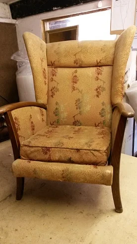
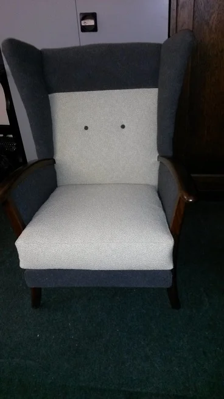
1960's vintage sofa, before and after.
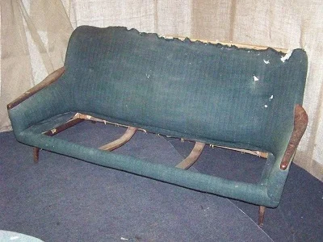
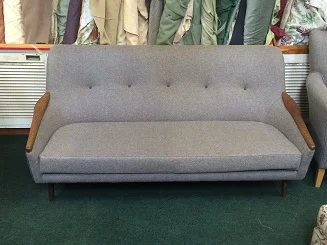
A Georgian wing Sofa.
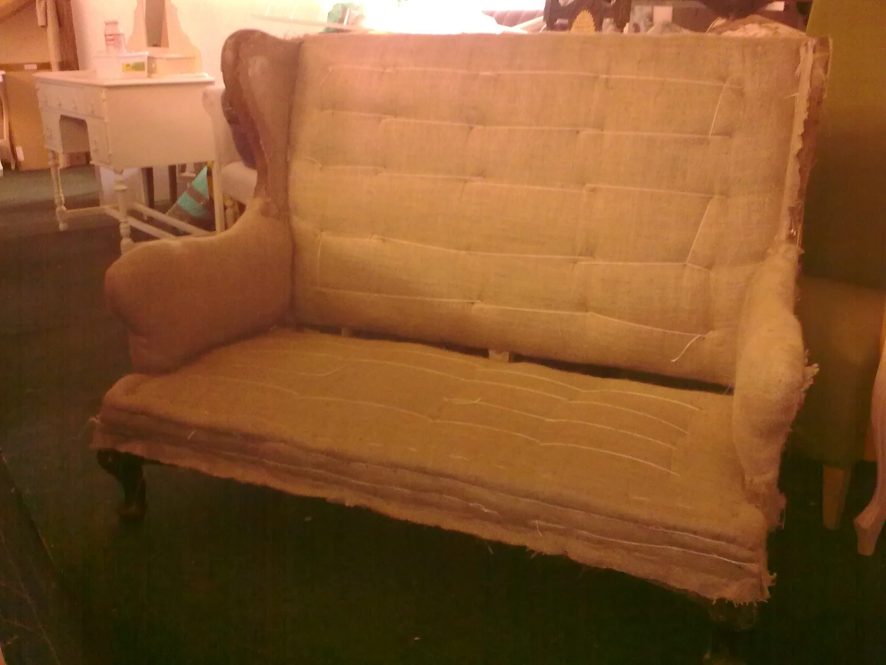
A traditionally upholstered Georgian wing sofa, this was completely reupholstered and recovered in a Kate Forman printed linen. (this item now sold.)
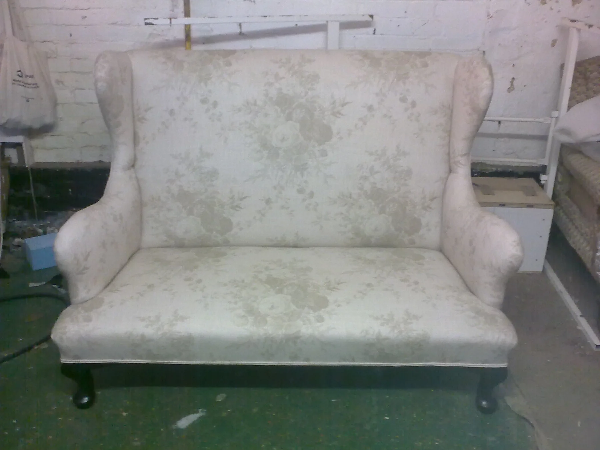
Edwardian chair covered in magenta velvet.
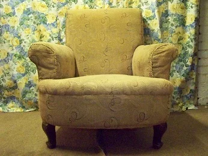

Froxfield arm chair.
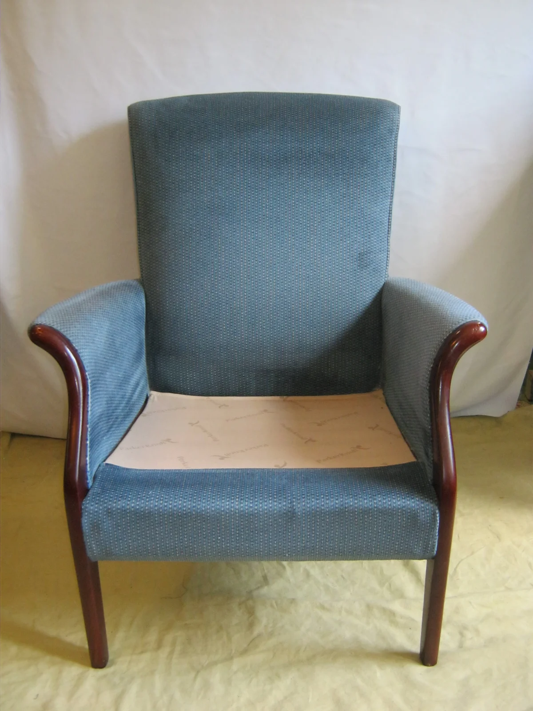
A Parker Knoll Froxfield chair, we recovered this in a ticking stripe fabric and covered in the show wood, to give a more modern contemporary look. also available as a higher back, wing version. From £395
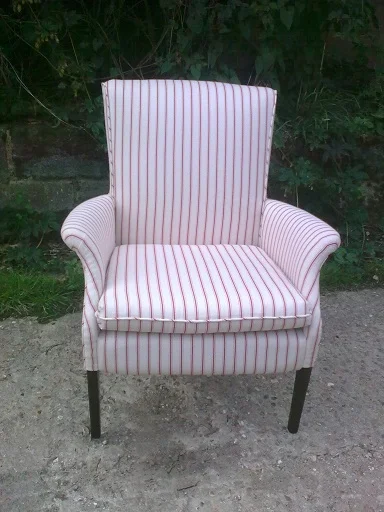
pair of club chairs.
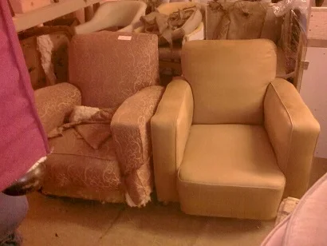
before pair of chairs, after pics to follow.
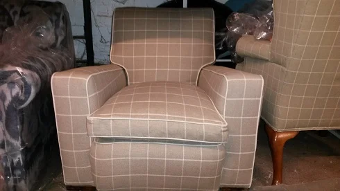
small wooden armchair, restored and recovered in a linwood stripe fabric.
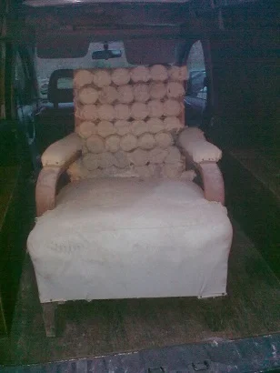
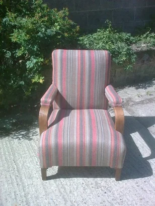
unusual armchair, recovered in moon wool.
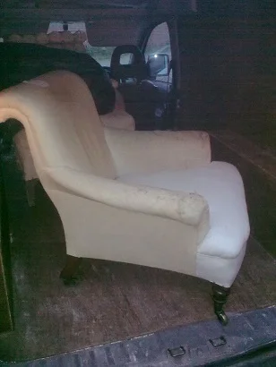
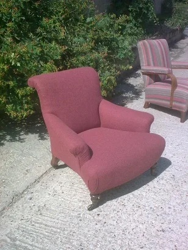
Victorian armchair, restored, remodelled and recovered in velvet.
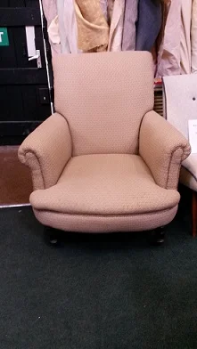
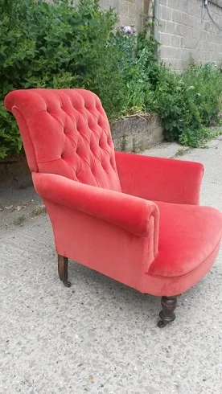
wing Chair.
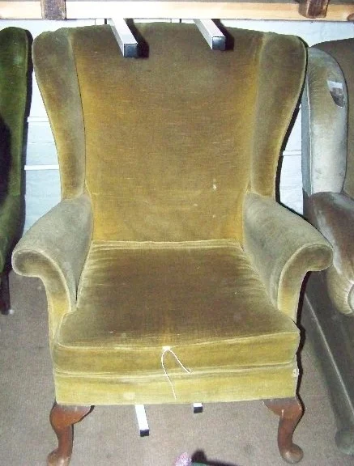
These are examples of before and after pictures of a parker knoll wing arm chair. we have many wing chairs available for restoration in your choice of fabric. from £495.
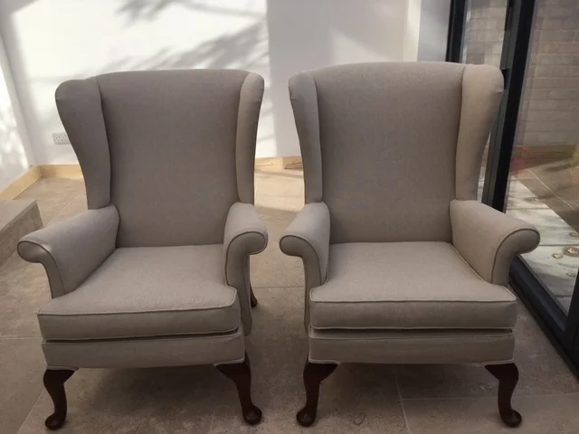